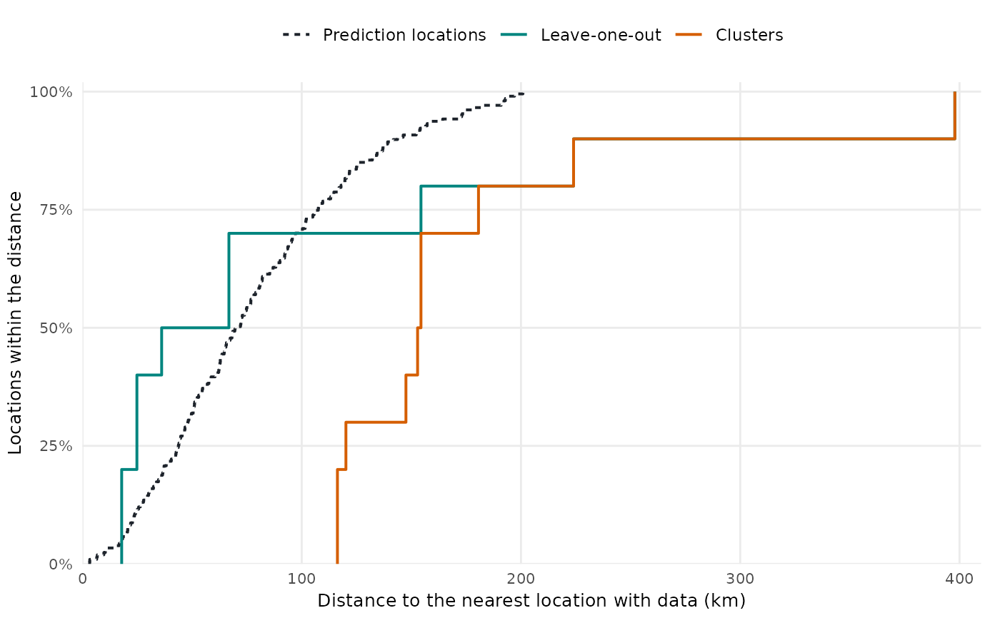

Maps the test sets of a cross-validation, or draws the distances of the
test locations from their training data. plot() of the test sets does
the same.
Arguments
- x
Test sets from
create_test_sets(). Fortype = "distance", also a named list of them, to compare.- type
What to draw, a
"map"of the test sets (the default) or the distribution of the"distance"from a test location to its nearest training location.- grid
For
type = "distance", optional locations at which the model will predict, such as a grid fromcreate_grid()or anysfobject of points. Their distances to the nearest location of the data are drawn too.- colour
The colour of the test locations and of the first line of the distances. The other clusters and lines have colours of their own.
- ...
For
plot(), the arguments ofplot_test_sets(). Forplot_test_sets(), not used, and an error if given, so that a misspelt argument is not ignored.
Details
Clusters are mapped together, with the number of each test set at its
centre. Other test sets have a panel each, the first twelve of them, with
the test locations in colour and the training locations in grey. Leave-one-out
test sets are the locations themselves.
The distances are drawn as cumulative distributions. When the curve of the test sets is close to that of the prediction grid, the cross-validation predicts about as far from the data as the map does, and its scores tell how good the map is. Test locations that are further from their training data make the model look worse, and test locations that are closer make it look better.
Examples
data(italy_sim)
example_data <- italy_sim[1:100, ]
clusters <- create_test_sets(example_data, method = "cluster", n_sets = 5,
seed = 1)
plot_test_sets(clusters)

# Compare the distances with those of a prediction grid
grid <- create_grid(create_convex_hull(example_data), spacing = 20)
plot_test_sets(list("Leave-one-out" = create_test_sets(example_data),
"Clusters" = clusters),
type = "distance", grid = grid)
